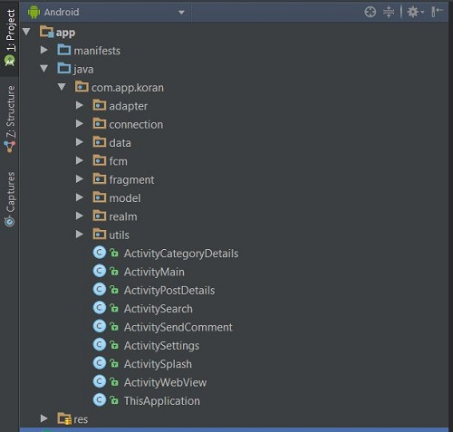
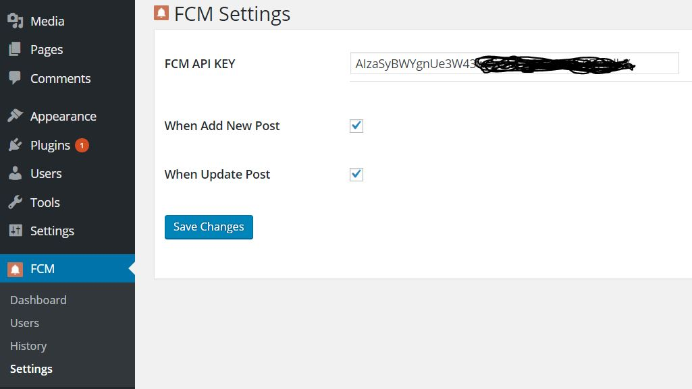
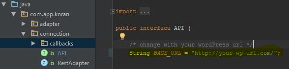

Thank you for purchasing my item. If you have any questions that are beyond the scope of this help file, please feel free to email via my user page. Thanks so much!
Whole project is organize by their package, the main fuctional can known by package name.

- All Activity Class -> com.app.koran - Adapter Handle List -> com.app.koran.adapter - Class Related with API connection -> com.app.koran.connection - The supporting data like, constant, config -> com.app.koran.data - FCM support class -> com.app.koran.fcm - Fragment page -> com.app.koran.fragment - All Object Model placed on com.app.koran.model - Realm ORM database -> com.app.koran.realm - Internet detector, and snippet com.app.koran.utils
This will make developer easy to find any class and customize.
for RENAME PACKAGE you can read from these link.
public class AppConfig {
public static final boolean MUST_REGISTER_TO_COMMENT = false;
. . .
. . .
}
#INSTALL FCM PLUGIN
1. Zip folder wp-fcm into wp-fcm.zip
2. Go to your wordpress admin menu Pugin > Add New > Upload Plugin
3. Select wp-fcm.zip and Install Now then Activate Plugin
After You install and activate plugin you need to set FCM API KEY

Here the tutorial how to get API KEY for FCM http://blog.dream-space.web.id/?p=116
#CONFIGURE FCM FOR ANDROID
You can read this tutorial to configure android http://blog.dream-space.web.id/?p=121
To connect Android app with your wordpress site you only need to change on line from file data/API.java

change this :
String BASE_URL = "http://your-wp-url.com/";
<string name="banner_ad_unit_id">ca-app-pub-46199952.......</string>
<string name="interstitial_ad_unit_id">ca-app-pub-4619995241......</string>
# DISABLE ADSENSE
new we make easy way to disable or enable adsense in the app, you only need to set boolean value with TRUE or FALSE.
open file data/AppConfig.java
public class AppConfig {
// flag for display ads
public static final boolean ENABLE_ADSENSE = true;
. . .
. . .
}
<resources>
<!-- The property id associated with this analytics tracker -->
<string name="ga_trackingId">UA-7985XXXX-X</string>
</resources>
public void trackScreenView(String screenName) {
. . .
}
public void trackException(Exception e) {
. . .
}
public void trackEvent(String category, String action, String label) {
. . .
}
// analytics tracking
ThisApplication.getInstance().trackScreenView("View post: "+post.post_plain);
public class AppConfig {
// flag for tracking analytics
public static final boolean ENABLE_ANALYTICS = true;
. . .
. . .
}
We use realm database to store data on Read Later so user can read it offline mode. All the class related realm can found on package com.app.koran.realm
# DOCUMENTATION
We use realm version 1.1.1 for more details you can read realm documentation here : https://realm.io/docs/java/1.1.1/
# DEFINITION
As the Material design guideline we use 2(Primary and Accent) mode color that implement to this app, you can found color value on res/values/color.xml
you can change this value by folowing this guideline http://www.google.com/design/spec/style/color.html , or you can change with any value as you want.
<color name="colorPrimary">#8E24AA</color>
<color name="colorPrimaryDark">#7B1FA2</color>
<color name="colorPrimaryLight">#9C27B0</color>
<color name="colorAccent">#EF8762</color>
<color name="colorAccentLight">#EC9D81</color>
<color name="colorAccentDark">#E87044</color>
- ActivitySplash.java - ActivityMain.java - ActivityPostDetails.java - ActivityWebView.java - adapter/AdapterPostList.java - data/SharedPref.java - model/Post.java - realm/table/PostRealm.java - utils/Tools.java - connection/API.java - connection/RestAdapter.java - app/src/main/AndroidManifest.xml - res/layout/activity_splash.xml - res/layout/include_post_content.xml - res/values/strings.xml - res/xml/setting_preferences.xml - build.gradle - app/build.gradle
- app/google-services.json - fcm/FcmInstanceIDService.java - fcm/FcmMessagingService.java - model/DeviceInfo.java - model/FcmNotif.java - model/Attachment.java - realm/table/AttachmentRealm.java - connection/callbacks/CallbackDevice.java - res/drawable/ic_notification.png
- utils/ConfigUtils.java - utils/DateFormatter.java - utils/PhoneUtils.java
- app/build.gradle - ActivityCategoryDetails.java - ActivityPostDetails.java - ActivitySearch.java - ActivitySplash.java - adapter/AdapterCategory.java - adapter/AdapterPostList.java - connection/API.java - res/layout/include_post_content.xml - res/layout/row_post.xml
- res/drawable-hdpi/ic_image.png - res/drawable-mdpi/ic_image.png - res/drawable-xhdpi/ic_image.png - res/drawable-xxhdpi/ic_image.png - res/drawable-xxxhdpi/ic_image.png